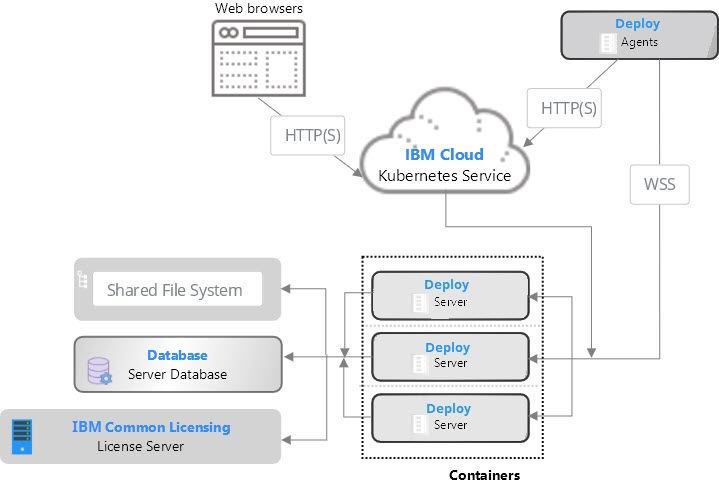

Installing the server with Kubernetes
The IBM DevOps Deploy (Deploy) server can be installed in a cloud-based environment, as a containerized server cluster, managed by Kubernetes. Deploy works with Kubernetes to simplify application deployment and manage versions in the containers.
The core installation of Deploy includes a server, database, and agents. In a typical containerized topology, the Deploy server is installed as a single server in a container or can be scaled to a server cluster managed by Kubernetes. The database is installed in a container or an on-premises location. Agents can be installed on cloud environments, virtual machines (VMs), containers, or physical systems.
